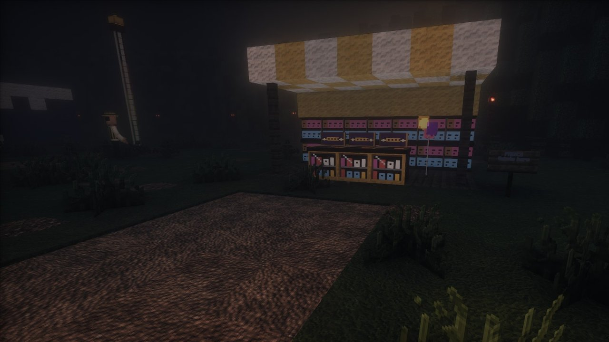

A travelling fair that left Static Hollow at midnight in 1962 and never arrived in Millbrook. Every full moon it sets up again: the same rides, the same tunes, the same night, over and over, run by a ringmaster who made a promise to something that listens on the radio.
- Since
- 1.75.9 (the Phantom Express 1.76.0)
- When
- Full-moon nights, till dawn
- Way in
- Its gate, out in the Overworld near you; or the Night Bus on a fair night
- Way out
- The curtain you came in by, or the dawn
- Waits for
- The story's end (since 1.77.3)
The gate
On full-moon nights the fair's gate is out in the Overworld somewhere near you: a striped arch, lanterns and a curtain. You hear the calliope first. It only stands on open, level ground, never in or near anything anyone's built, and it's gone at dawn. Step through the curtain into the fairground, its own place under the same moon (Moonrise Till Dawn). The barker at the gate calls you in: "Step right up, step right up! Crane's Midnight Fair is open, from moonrise till dawn!" The Hound doesn't come in: he lies down outside the gate and sleeps till you're back.
The rides
- The great wheel: use a gondola to get on; sneak to get off, and you're set down at its foot, not dropped (Round and Round).
- The carousel: a painted horse each (Painted Ponies).
- The Phantom Express, the ghost train (below).
Every seat goes round smoothly with you in it. In 1.77.2 the rides were fixed: on Minecraft 26.x they wouldn't seat you at all.
The games
The fair's games pay in Annex tickets, and its prize counter takes them the way the Starlight Annex's does.
| Game | How | Pays |
|---|---|---|
| The shooting gallery | The man gives you a cork gun and ten corks. Tin ducks go by on two rails at the back; a round is thirty seconds or ten corks | Two tickets a duck, five more for all ten (Sharpshooter) |
| The high striker | The man gives you the mallet. Hold it to swing it back while the meter goes up and down; let go on the pad when it's at the top | Eight tickets for ringing the bell (Ring the Bell) |
| The arcade tent | The Annex's machines: Tune-In tokens, the claw machine and Star Catcher | Tickets, by score |

With every one of the revue's records in your collector's hall, the fair's games pay double. There's a pond, too, with something in it: static fishing works there.
Old Nell
In her tent, once a night, she reads your fortune ("Come in, come in, dearie. Sit down. Give me your hand."), and what she sees is true: where something you haven't found yet is waiting (Cross My Palm). "Come back next full moon. The future changes, and so do you." Her hints turn up in the Hollow Herald's classifieds too, signed Madame N., and she rings you on a payphone about the storms.
Augustin Crane
The ringmaster, at his podium. He has a little more to tell you each night you come: who he is, the night in 1962 when they packed up after the last show and drove out on Route Nine "and the road simply kept going", the promise he made to keep the show running for something that listens on the radio, and his ledger with every visitor's name in it. After five visits he tells you the truth (there's no crowd, only him, the music, and whoever wanders in) and gives you Crane's Last Ticket (ADMIT ONE, 1962). Punch it: use it on him (The Last Ticket). Then he can finally leave with the dawn, and he leaves you his hat.
Once he's free, the payphones put WHOL's own call through, and that starts the Final Broadcast.
The Phantom Express
The fair's ghost train (1.76.0), in a black-and-red building in the fairground's north-east corner. Two tickets a ride. Get in the car at its doors and it takes you through the dark, Crane's spiel off the horn speakers:
- the coffin sitter;
- the lady in the window, who rises and leans out;
- the corridor where only a camera sees who's sitting behind you;
- the moon on a spring;
- the flash of the ride photo, and out. Now and then there's someone in the photo who wasn't on the ride.
Riding it earns All Aboard. Every other full moon, for somebody who's ridden it before, the car takes a wrong turn: down through the floor into the dark under it, and the listener is down there. Crane gets you out, and gives you the Lost Rider's Ticket ("PHANTOM EXPRESS. ADMIT ONE. Never used. Crane said not to tell the others."), and Wrong Turn.